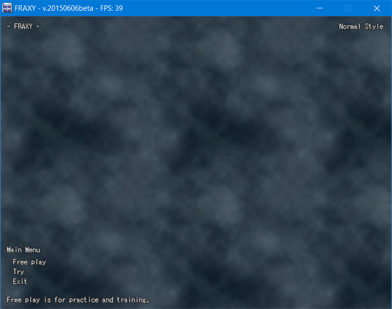
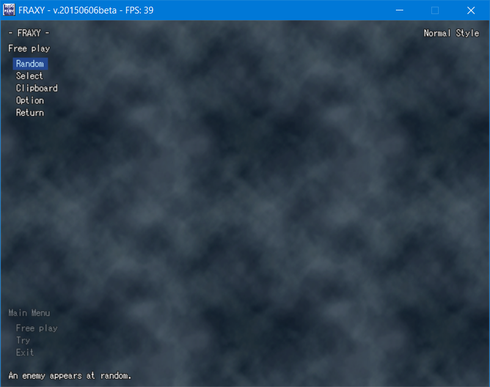
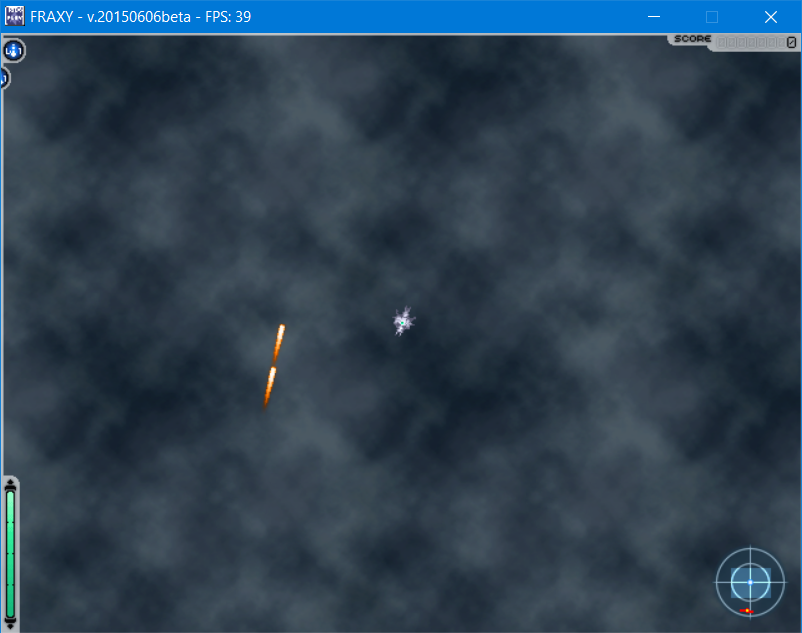
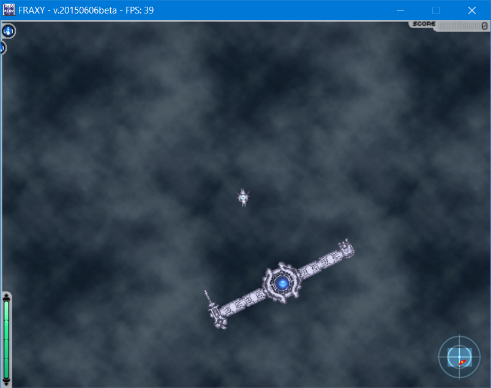
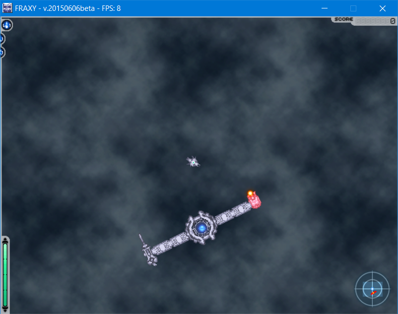
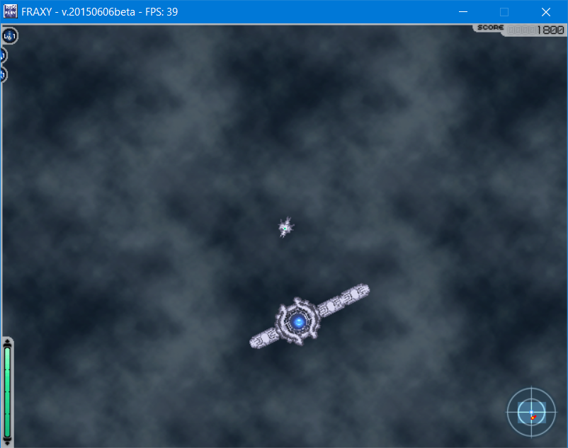
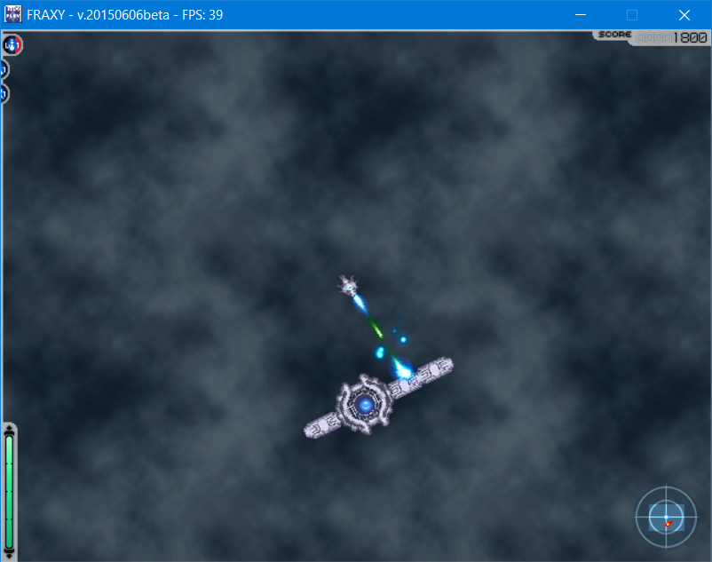
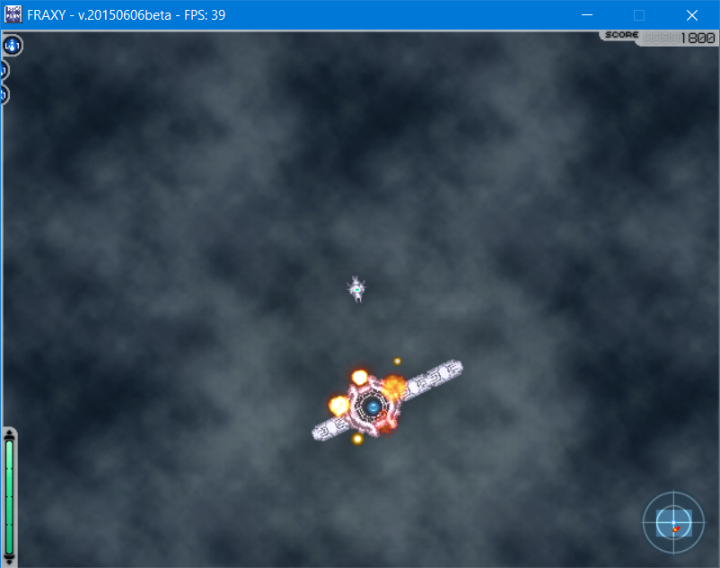
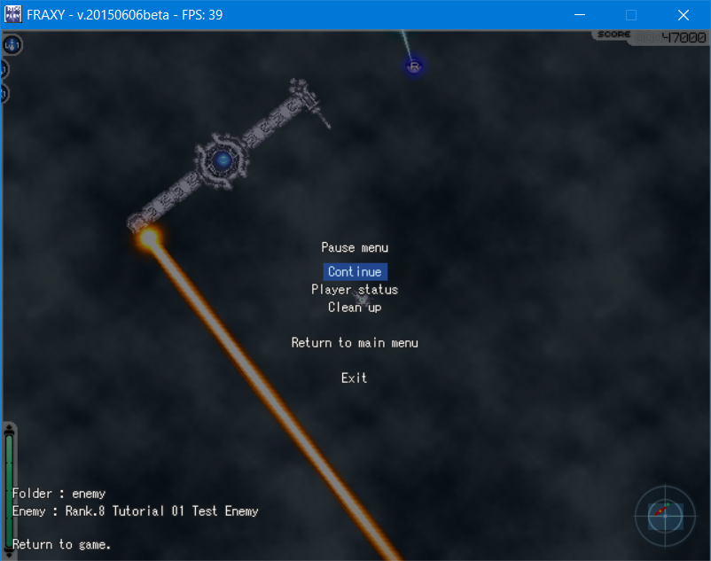

This is the first in a series of tutorials about FRAXY. This tutorial covers basic FRAXY gameplay.
Please note that virtually every element of this gameplay is at liberty to be modified by the designer of the boss you are facing. This tutorial describes unmodified gameplay only.
Fraxy is a top-down shoot-em-up, or shmup, game.
In FRAXY, the player is able to move and rotate freely on a 2D plane. Their objective is to battle a powerful boss machine, evading its attacks and firing back to break through its defenses and ultimately, destroy the core at the heart of the machine.
Before running the game for the first time, you should run config.exe. This is the game's settings configurator, and it is here that you can adjust options such as various visual settings, font size, control bindings and so on. In particular, take note of the "View change" keybind. You will need it later. Once you believe you are comfortable with your settings, feel free to run fraxy.exe.
This is the game's main menu. The first option, Free Play, lets you simply face a boss of your choosing. The second, Try, lets you load a Try script file to attempt a scored run of a pre-made challenge.
For now, let's stick to Free Play. Click the Free Play button.
The last button here, Return, will take you back to the main menu. The Option button allows you to configure various settings about your Free Play session. The remaining three are different methods for selecting the boss you want to fight.
For this tutorial, we will be using the Clipboard option.
Some enemy data is provided below. Select all of the below text and copy it (Right-click and select "Copy", or press CTRL+C on your keyboard).
Now switch back to FRAXY, and click the Clipboard button. You should load into something like the below encounter.
You will notice that the boss is firing its weapons from off-screen. This enemy simply fires straight forwards, so you can ignore it for now.
You will also notice that the text which appeared when the boss spawned referred to it as "Rank 1". "Rank" is the difficulty of the boss, and it goes from 1 (easiest) to 100 (hardest). As Rank increases, bosses move more quickly and their attacks become more dangerous.
Take some time to get used to moving around and shooting. By default, you move with the WASD keys, and aim with the mouse. Notice that as you move your mouse around, the camera moves a bit to stay ahead of your ship. If you find this effect disorienting, you can press the "View change" button to keep the camera centered on your ship. If you have forgotten what the "View change" button is, you can run config.exe and check your input bindings at any time.
In the top left, you can see your equipment slots. By default, your first slot contains the Bullet weapon, and your second slot contains Vulcan. Switch between these weapons, and observe the difference in their behaviour. You have five slots, which can contain both weapons and support equipment. We will learn how to change the contents of your equipment slots later.
It is time for us to approach and engage the boss. In the bottom-right of your screen, you can see a radar display. The box shape in the radar shows the area you are looking at, and the red shape indicates the location of an enemy. Move towards that red shape now. You should encounter something like this.
This is a very simple boss. It consists of a core, some structural elements, and two different weapons. Different cores have different movement patterns available, but for this tutorial, the core's movement has been stopped.
In the bottom left of the screen, you will see a green meter. This is your energy meter, which acts as both your health and your ammunition. If it reaches 0, your ship is destroyed. Your ship is also destroyed if you collide with any solid boss parts, regardless of your energy level.
Try firing your weapons. Firing your default bullet weapon causes the meter to dip only very slightly, while firing the vulcan weapon in slot 2 causes it to dip a little more. Energy regenerates over time, and for these simple, weak weapons, it regenerates faster than your weapons drain it. Stronger weapons are available, and these weapons drain much more energy when fired.
Try standing in front of the boss's bullet weapon. At this low difficulty, the two shots it fires should not be enough to destroy you. Notice how quickly energy regenerates. Try firing your weapons while your energy is partially drained to see how it regenerates more slowly.
By default, most parts in FRAXY can be destroyed if they take enough damage. Try firing at one of the boss's weapons. Notice that parts flash white when they take damage, and as they get close to being destroyed, they begin to flicker red.
Continue to fire at this part until it is destroyed. At higher Ranks, destroyed parts fire revenge bullets towards you, but at this low Rank, you will not encounter revenge bullets.
Destroying the weapon parts had no additional effect. This is because they had no child parts. In FRAXY, each part, except the boss's core, has a 'parent' part. A 'parent' may have multiple 'children'. If a part is destroyed, all of its children are also destroyed. You can generally tell what is connected to what just by looking, but it is up to the boss creator to make these parent-child connections make sense.
In this case, the parents of the weapons are the struts they're connected to. Try shooting at the strut that the other weapon is attached to.
Notice that when you destroyed this strut, it took the weapon attached to it with it. This is called 'chain destruction'. On higher Ranks, every part destroyed this way would fire its own revenge bullets at you. If playing for score, you also gain more points for destroying parts in a chain than you do destroying them one by one.
Not all parts can be destroyed by the player. On this boss, the inner half of the struts have been made indestructible. Try shooting at them.
Notice how your bullets bounce off, having no effect. The only way to destroy these indestructible parts is by destroying their parent. It is now time to turn our attention to the core.
Every boss is built around a core. Some may include multiple cores, or have special cores which allow parts to break off and act independently, but destroying cores is always your main objective.
Destroy the core.
The boss has now been destroyed. The destroyed core has dropped an item. The red P increases the level of your currently-equipped weapon, to a maximum of 5. The green E increases your energy level, again to a maximum of 5. The blue R increases your energy regeneration rate, to a maximum level of 5. Alternatively, you can fly into the energy mass at the center to gain a temporary boost to all of your weapons, referred to as "Over soll power".
If you have not copied anything else onto your clipboard since spawning the boss, a second copy of it should have spawned. If it has not, copy the boss data above again and return to the game.
Notice that the Rank of this boss is slightly higher than the previous one. It is now firing slightly more quickly than before. If it could move, it would also move around slightly faster.
Continue destroying this boss as long as you need to to grasp the game's controls. When you are done, press the Escape key.
This is the Free Play pause menu. Gameplay is paused while on this menu. Pressing "Continue" resumes play. Pressing "Return to main menu" will return you to the main menu, leaving the boss active in the background. Pressing "Exit" quits the game entirely.
"Player status" lets you modify your weapons and their levels, as well as your energy and regeneration levels, and even select a different ship type. Different ships have different stats, as well as slightly different weapon behaviours. In particular, the special 'BulletHell' ship requires no energy to fire any of its weapons, and receives a different set of items when it destroys a core, but it is destroyed instantly on taking any amount of damage.
Pressing "Clean up" will do nothing at first. However, when gameplay resumes, or when you return to the main menu, the boss will immediately self-destruct. If you have resumed gameplay, a new boss will immediately spawn if possible. Destroying a boss this way does not make it drop an item, or increase your Rank.